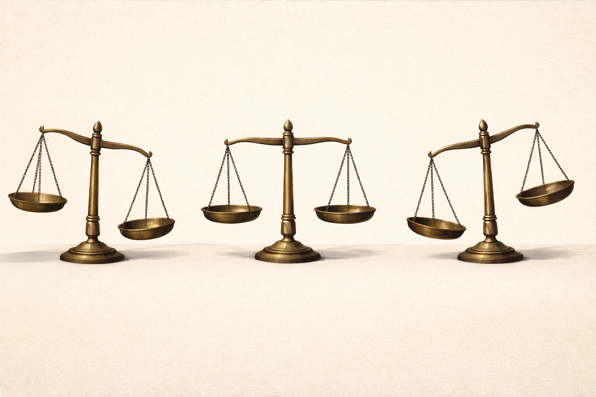
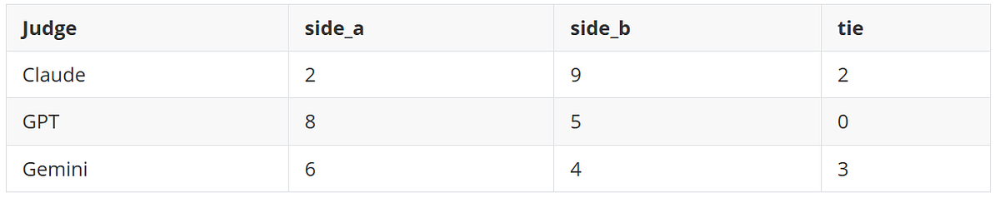

The moment the whole thing got weird
I've been tinkering with Shipwright, an open-source toolkit for PM agents. Lately, I got curious: how would the major models handle the same set of questions? I wanted a way to compare their outputs without having to judge every result by hand.
So I needed some kind of judge I could trust — or at least poke at. Something that could look at two artifacts, score them using a rubric, and help me figure out which one actually came out ahead.
I thought the hard part would be building that harness. It turned out, it wasn't. The tricky part was realizing that the judge wasn't actually neutral.
I gave Claude and GPT the same 13 debates to judge. These were a mix of real-world cases from my career, current-day scenarios, and a couple of famous HBR cases. Same arguments. Same rubric. Same prompt. Same effort level.
Claude picked side B in 9 out of 13 debates. GPT picked side A in 8 out of 13 debates. That didn't feel like random noise. It felt like I'd accidentally discovered that my "referee" had an opinion of its own.
I'm a biologist-turned-PM, so when something feels off, my first instinct is to run some controls.
A concrete example
One of the most revealing cases in the set was a scenario called handoff-contradiction.
The artifact was designed to stress contradiction handling: missing context, conflicting signals, and ambiguity about what was actually known versus inferred.
When I later ran an artifact-matched three-family replay on the exact same frozen inputs:
- Claude named
evidence_disciplineas decisive - GPT also named
evidence_discipline - Gemini named
decision_usefulness
That's when the bigger picture started to come into focus. I realized I wasn't just comparing outputs — I was seeing different, often hidden, ideas of what actually makes a good artifact.
What I was building
I'm building an open-source PM agent toolkit called Shipwright (MIT). One part of it is a cross-model conflict harness: a structured debate where two model families produce competing artifacts through four rounds:
first_passrebuttalfinaljudge
The debating sides are blinded to each other's identity. A third model then judges the final artifacts against a five-dimensional rubric:
- claim quality
- evidence discipline
- responsiveness to critique
- internal consistency
- decision usefulness
The goal wasn't to crown a universal winner. It was to ask whether cross-family judging is stable, fair, and auditable when repeated.
That matters because "LLM-as-judge" is quietly becoming default infrastructure in agent evals, artifact review, ranking pipelines, and product decision systems. Most of us behave as if the judge is a neutral referee.
But it's not.
The controls I wanted before believing anything
I didn't want to over-interpret a flashy first result, so I tried to rule out the obvious confounds.
1. Frozen-artifact replay
Early runs mixed together two very different sources of variance:
- the debating sides generated different arguments each run
- the judges scored differently each run
That made it impossible to tell what I was actually measuring.
So I built a replay path that takes a completed run, freezes every artifact, and runs a new judge against the exact same saved verdict.prompt.txt and verdict.input.json.
From that point on, any variance is judge effect, not generation effect.
2. Artifact-matched three-family comparison
I picked five scenarios and made Claude, GPT, and Gemini judge the exact same frozen artifact bundle.
That let me compare judge families without side-generation drift.
3. Repeatability study
I ran Gemini 5x on the same frozen artifacts for three contradiction-heavy scenarios so I could separate one-shot weirdness from stable house style.
4. Rationale inspection
I extended the verdict schema so judges had to produce:
- per-dimension rationales
- side summaries
- a named
decisive_dimension - confidence
needs_human_review
That made the reasoning legible, not just the final verdict.
What showed up
1. Claude and GPT lean in opposite directions

Two frontier judges, same debates, opposite directional lean.
That doesn't mean either model is useless. But it does mean neither one should be treated as an unbiased solo judge.
2. Gemini is genuinely distinct, not redundant
Gemini dissents from both Claude and GPT in 6/13 scenarios. It produces more ties, more low-confidence calls, and more needs_human_review flags.
That's valuable. It means Gemini is not just echoing one of the other judge families.
But that also means Gemini isn't just a simple "tiebreaker." It brings a different perspective, not necessarily a quick answer.
3. The Gemini bias story got narrower under scrutiny
At first glance, Gemini appeared to have a broad house-style bias toward decision_usefulness. On the full replay pass, it chose that as the decisive dimension in 10 of 13 cases.
That looked suspicious. But once I ran the repeatability study, the story got more specific.
prd-hidden-scope-creep. Across 5 repeated frozen replays:
- winner was stable: side_b in 5/5
- decisive dimension split: evidence_discipline 3/5, decision_usefulness 2/5
So this case does not support the strongest version of the bias story.
event-automation-boundary. Across 5 repeated frozen replays:
- winner was stable: side_a in 5/5
- decisive dimension varied across responsiveness_to_critique, decision_usefulness, and evidence_discipline
So this also isn't a clean "Gemini always collapses to usefulness" case.
handoff-contradiction. This is the one that held up. Across 5 repeated Gemini replays:
- winner: side_b 4/5, side_a 1/5
- decisive dimension: decision_usefulness 4/5, evidence_discipline 1/5
And in the artifact-matched three-family comparison on the same frozen bundle:
- Claude chose evidence_discipline
- GPT chose evidence_discipline
- Gemini usually chose decision_usefulness
So the strongest current conclusion is:
Gemini does not show a universal usefulness bias across all cases, but it does show a stable usefulness-led tendency on at least one important contradiction case.
That's a much narrower — and more useful — claim than the sweeping bias story I started with.
4. Some of the Gemini skew appears to be selection-layer bias
When I inspected the per-dimension rationales, Gemini often did reason sensibly about evidence discipline and internal consistency.
In handoff-contradiction, for example, Gemini acknowledged the evidence-discipline tension clearly. But it still named decision_usefulness as decisive.
That suggests a narrower problem than "Gemini can't reason about evidence issues."
The more plausible interpretation is:
- underlying rubric reasoning can be sound
- the final
decisive_dimensionselection step can still skew toward usefulness
That's interesting because it means some of the failure may be in the final labeling step, not the whole reasoning process.
5. The operational caveat: Gemini required repair every time
This part matters a lot if you're thinking about production use.
All 13/13 Gemini replay verdicts in the richer schema path required one repair pass before becoming schema-valid JSON.
That means:
- the substantive verdicts are often useful
- the raw first-pass outputs are not production-clean
So while Gemini is definitely interesting from an analysis standpoint, needing to fix its output every time makes it a tough pick as a default judge right now.
What I changed my mind about
At one point I thought Gemini might be the best default single judge because it was the most willing to abstain, tie, and surface uncertainty.
After more testing, I changed my mind.
If I had to pick a default solo runtime judge today, I would choose GPT.
Not because GPT is unbiased — it isn't.
I would choose it because:
- it is more operationally reliable than Gemini
- it surfaces review flags more often than Claude
- it is less dangerous than a more overconfident solo judge
So here's where I've landed for now:
- Default single runtime judge: GPT
- Default two-judge contrast panel: Claude + GPT
- Default triple panel: Claude + GPT + Gemini
- Best use of Gemini: escalation judge, ambiguity detector, and third-family perspective when disagreement itself is informative
What this means for LLM-as-judge systems
Three things stood out after all the checks.
1. Don't use a single model family as a neutral arbiter
If your evaluation system is only one model family deep, it has a bias profile you probably can't see from the outside.
2. Triple-panel evaluation should be an escalation, not a default
Running three judges on everything is expensive and noisy.
The better pattern is:
- one judge by default
- escalate to a second when confidence is low or the case is contradiction-heavy
- escalate to a triple panel only when disagreement itself is important signal
3. Ties should be routing events, not dead ends
A useful judge shouldn't stop at: "I can't decide."
It should also say:
- what uncertainty blocked the verdict
- what evidence would help
- what question would most reduce uncertainty
- what next artifact would be more appropriate
That pushes the verdict from "score" toward "workflow signal," which feels much more useful in practice.
What I'm not claiming
- This is not proof of deep reasoning failure in any model family.
- The broader 13-scenario comparison is still at the scenario level, not perfectly artifact-matched row by row.
- Thirteen scenarios is a small sample. I see this more as useful directional evidence and a starting point for methodology and not a final benchmark.
Why I'm sharing it
Because I have a hunch a lot of us are building on LLM-as-judge assumptions we haven't really put to the test.
The biggest thing this project gave me wasn't a ranking of models. It was a better question:
If you're building eval infrastructure, the frozen-artifact replay pattern may be worth stealing. It was the single most useful methodological move in the project.
If you're using LLM judges in production, I'd strongly suggest:
- exposing disagreement
- carrying uncertainty forward
- and treating judges as inputs to orchestration, not oracle endpoints
The harness, schemas, and the full correspondence where I argued through the methodology with Codex and Claude are all in the repo. I kept the memos because I wanted the conclusions to be inspectable, including the parts where the story got narrower or changed.
Shipwright is MIT-licensed. If you think my method is off, I'd honestly rather hear about it than hold on to a flattering result.
Repo: github.com/EdgeCaser/shipwright
Review correspondence: docs/review/ on the codex/cross-model-debate-harness-spec branch
Relying on an LLM judge somewhere in your product?
If model evaluation is quietly load-bearing in your pipeline, Edgecaser can help you check what the judge is actually optimizing for before you build on the verdicts.
Let's talk about your product